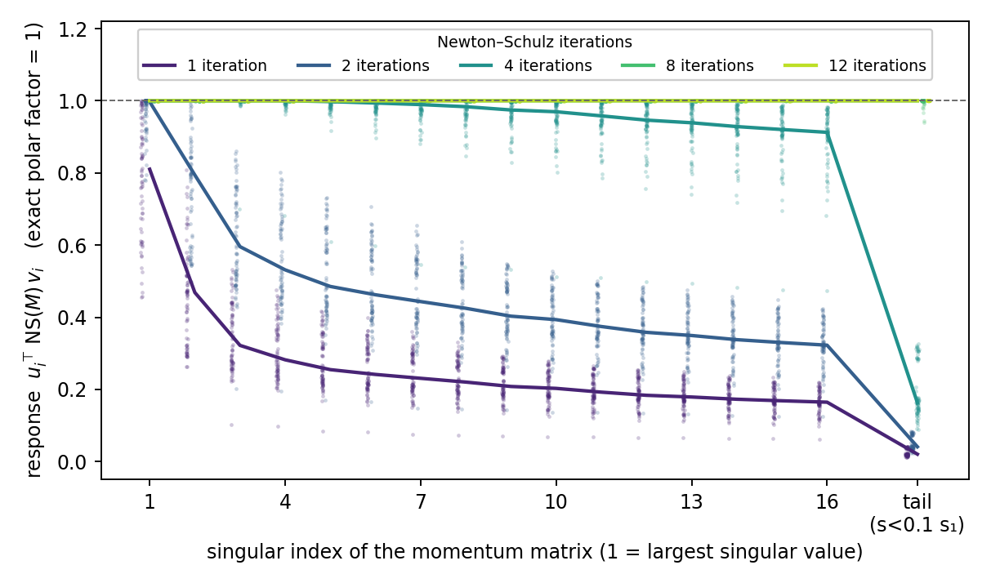
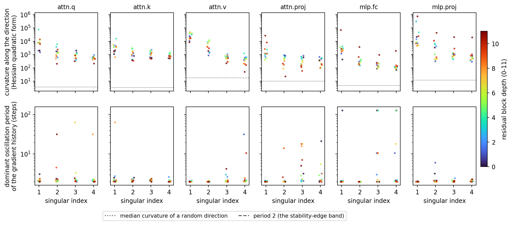
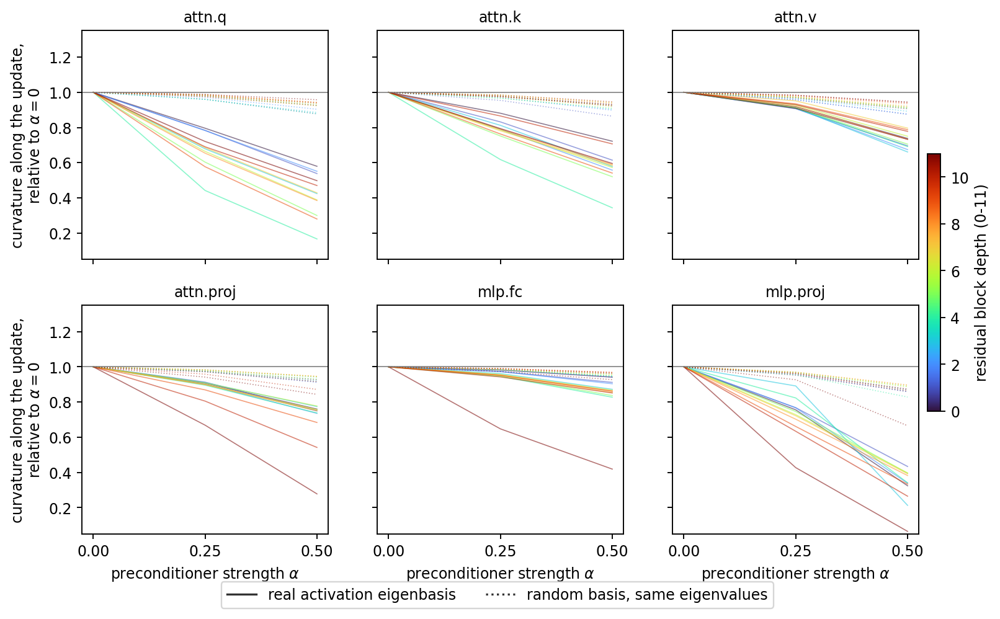
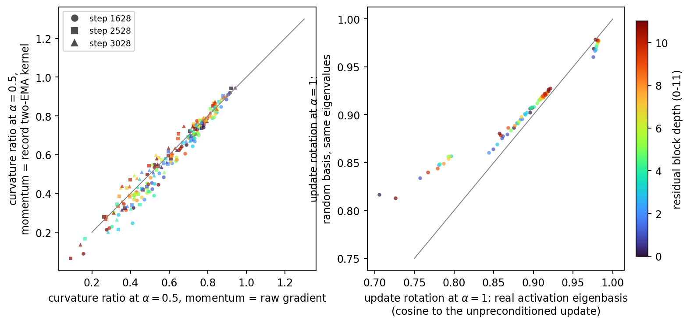
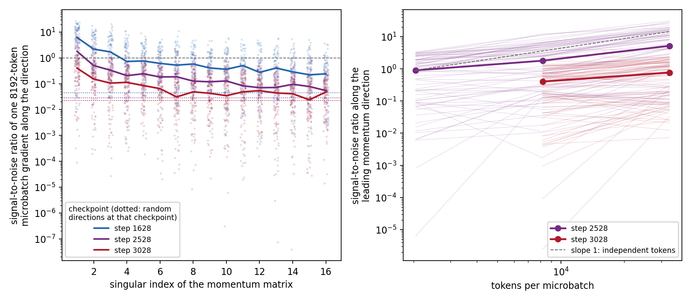

How momentum and Newton divide the work
A measurement campaign in Muon language-model training · 31 August 2026
A temporal momentum kernel and a Newton-type preconditioner can both reduce how strongly an update responds to high-curvature motion. If they suppress the same directions, combining them applies the correction twice. If they use different information, the combination should preserve both effects.
We studied this question in a 3250-step NanoGPT training run whose hidden weight matrices use Muon. At iteration t, Muon forms a momentum matrix Mt from present and past gradients. If Mt has singular value decomposition U S VT, Muon uses the polar factor U VT as its update direction. The two-average configuration that currently holds the benchmark speed record constructs Mt from exponential moving averages with different decay rates; we call it the record kernel.
A Newton-type addition changes the matrix before the polar factor is taken. We use the right preconditioner proposed by Du and Su: the momentum matrix is multiplied by a negative power of the input-activation second moment. The exponent α controls the strength; α = 0 leaves the matrix unchanged. This construction supplies feature-space information that a temporal kernel may not contain.
The measurements separate the two mechanisms at one update. The temporal kernel selects a curvature-stratified subspace dominated by period-two motion. Activation preconditioning then moves the update toward flatter directions by almost the same factor for raw gradients, short momentum, and record momentum. The remaining question is whether this separation survives hundreds of training steps.
Matrix sign erases in-frame preconditioning
Write msign(M) for the polar factor U VT. A positive reweighting of M's own singular values cannot change the exact Muon direction:
The equality holds whenever f is positive on the nonzero singular values. A useful preconditioner placed before matrix sign must therefore change the singular vectors, change the supported rank, or exploit error in the finite algorithm used to approximate the polar factor.
For each input singular direction, the response is the output singular value divided by the value produced by exact matrix sign. Exact matrix sign therefore has response one at every nonzero input singular value.
If the deployed 12-iteration Newton–Schulz algorithm leaves useful singular-value dependence, its response should remain below one in the singular directions carrying high curvature. A response of one means that changing those input singular values cannot change the update.

The finite implementation gives no useful exception. The leading singular responses differ from one only at roughly the fourth decimal place, and the residual update has much lower directional curvature than the polar update itself. The same conclusion holds exactly in algebra and numerically in the optimizer.
This result agrees with a complementary observation from Kaon: replacing Muon's singular values while preserving its singular vectors can retain language-model training performance. Together, the results shift attention from singular values to the directions selected before matrix sign.
Momentum concentrates period-two motion into a sharply stratified subspace
The temporal kernel can affect Muon by changing which singular vectors appear in the momentum matrix. We measured curvature along each of the leading momentum singular directions and estimated the dominant oscillation period of the gradient projected onto the same direction.
For singular vectors ui and vi, the matrix direction is their outer product. Its directional curvature is the Hessian quadratic form after Frobenius normalization. Its dominant period is the strongest Fourier component of the recorded scalar sequence ⟨gt, uiviT⟩.
If the record kernel behaves like a scalar curvature correction, curvature should vary smoothly with the oscillation frequency it transmits. If it mainly selects an edge-of-stability subspace, several leading directions can share the same period while carrying very different curvature.

The first four momentum directions all lie near period two. Curvature nevertheless falls about sixfold from the leading direction to the second. Matrix sign gives both directions the same singular value in the update. Momentum has therefore selected a period-two subspace without equalizing the curvature inside it.
Activation preconditioning contributes a separate geometric effect
Holding model parameters and gradient history fixed isolates the instantaneous composition. At each saved training state, we reconstructed three matrices: the current raw gradient, a short exponential moving average with decay 0.85, and the record two-average momentum. Each matrix was right-multiplied by
where rows of X are layer inputs from the evaluation tokens. We then measured the polar update's directional curvature. A control kept the eigenvalues of Pα and replaced its activation eigenvectors with a random orthogonal basis.
If momentum and activation preconditioning correct the same geometry, stronger preconditioning should have a smaller effect after record momentum than after the raw gradient. If their information is independent, the curvature ratio should be nearly the same for all three histories. The random-basis control should preserve any effect caused only by anisotropic eigenvalues and destroy any effect carried by activation directions.

At α = 0.5, the real activation basis reduces curvature along the record-momentum update to roughly 60% of its unpreconditioned value. Replacing the activation eigenvectors with random vectors leaves about 90% of the original curvature. Eigenvalue anisotropy causes rotation, while the activation directions supply most of the movement toward lower curvature.
The activation-basis advantage repeats early and late in training, although its curvature reduction is weaker at the late state. The geometric contribution therefore survives across the measured trajectory.

The per-matrix comparison reaches the same conclusion as the aggregate. The record kernel changes the baseline curvature of the update; activation preconditioning then multiplies that curvature by nearly the same ratio. The only consistent coupling changes about two percent of the total rotation at the strongest tested preconditioner.
Rotation magnitude by itself is uninformative here. Real and random eigenvectors rotate the polar update by similar angles because anisotropic eigenvalues determine how much the singular frame moves. Only the real activation eigenvectors steer the update toward substantially flatter directions.
The mix must respond to measured minibatch information
Approximate independence for one update does not determine how much memory or preconditioning to use. Their estimation errors respond differently to the available data. The relevant state variable is the signal-to-noise ratio in the directions selected by momentum.
At a frozen training state, project each of 32 consecutive microbatch gradients onto a momentum singular direction. The squared mean projection divided by the projection variance defines the plotted signal-to-noise ratio. Consecutive microbatches need not be statistically independent; the token-scaling measurement captures the resulting departure from ideal averaging.
Independent token noise would make variance fall inversely with token count and produce a slope of one for signal-to-noise ratio on log–log axes. A fixed momentum–Newton mixture would also require directional signal-to-noise to remain roughly stationary through training. Failure of either prediction requires online measurement.

The leading direction's median signal-to-noise ratio falls from 6.2 early in training to 0.40 near the end. Increasing token count raises signal-to-noise with an exponent near 0.55 rather than one. Batch size alone therefore cannot set the momentum–Newton mixture in this regime.
The gradients needed to estimate this state already exist on each data-parallel worker before all-reduce. A recorder can project those local gradients onto the momentum directions without another forward or backward pass. The projection, singular-value decomposition, communication, and storage still have overhead, which must be measured in the instrumented run.
A candidate rule and the prospective training test
A temporal kernel can express only corrections indexed by temporal frequency. The part of an activation preconditioner predictable from that frequency response is exposed to double counting; its remaining cross-basis action contains information unavailable to the kernel. This decomposition is a proposed design, not yet a trained optimizer.
The candidate rule uses measured directional signal-to-noise to divide responsibility. Low signal-to-noise calls for longer averaging and a preconditioner closer to identity. High signal-to-noise permits shorter memory and stronger activation correction. Residual conditioning supplies the second boundary: momentum vanishes as the corrected problem becomes well conditioned.
A training experiment is now crossing α ∈ {0, 0.25, 0.5} with record and short momentum from two shared training states. Before seeing those losses, the expected interaction is small compared with the main effect of α. Curvature is measured after 250, 500, and 750 continuation steps because the optimizer may move to a new state where curvature again reaches its stability boundary.
The training result can overturn the instantaneous measurement. In an earlier kernel comparison, the direction with better immediate loss produced worse continuation loss. A large momentum–Newton interaction would show that the present one-update factorization also fails after the optimizer changes its own state.
Reproduction
| Training stack | Track 3 NanoGPT; 12 transformer blocks; Muon on 72 hidden weight matrices; AdamW on embeddings, output head, and scalar parameters; 3250 training steps. |
|---|---|
| Record temporal kernel | Two exponential moving averages with decays 0.85 and 0.98; fast-buffer mixture weight 0.4385; applied after step 1000; Nesterov mixture coefficient 0.95. |
| Short temporal kernel | One exponential moving average with decay 0.85, initialized from the serialized fast buffer. |
| Activation preconditioner | Right multiplication by a damped activation second-moment power; α ∈ {0, 0.25, 0.5, 1.0} in the same-state measurements. Full input covariance in the offline geometry measurement. |
| Saved training states and data | Steps 1628, 2528, and 3028 of the same 3250-step record trajectory. Activation moments and curvature use 131072 held-out tokens. Noise measurements use 32 consecutive 8192-token chunks from the training stream. |
| Code and data | Measurement scripts and scored tensors live in the `muoff` campaign; the explicit training grid uses public branch `codex/req025-newton-muon` at commit `596d2868282b0ae4af4fecd5c9446f713c923423`. |
References. Zhehang Du and Weijie Su, The Newton-Muon Optimizer. Zakhar Shumaylov et al., Muon is Not That Special: Random or Inverted Spectra Work Just as Well.
Scope. The fixed-parameter geometry and signal-to-noise measurements use one training trajectory and repeated hidden matrices within that trajectory. The running training comparison uses shared saved states and is a mechanism test rather than a multi-seed estimate of final validation performance.